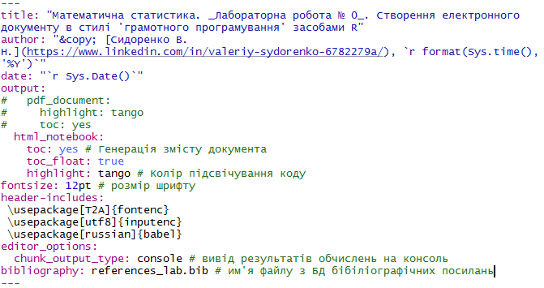
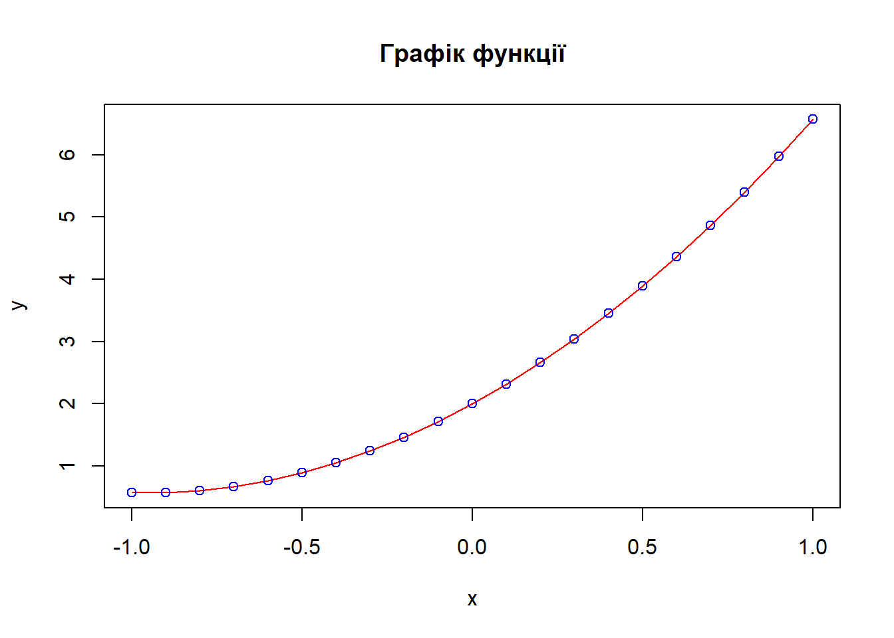

1Лабораторна робота 1. Створення основи типового Data Science-проєкту.
Мета:quick start для роботи у середовищі RStudio із застосуванням концепції “грамотного програмування” засобами мови програмування R, пакету R Markdown та системи комп’ютерної верстки LaTeX.
1.1 Що ви будете вміти?
Створювати електронний документ (у форматах html, pdf, doc) на кшталт того, який ви зараз читаєте (інтерактивне меню, можливість показати/сховати код і т. ін.).
використовувати засоби редактору LaTeX для набору формул, наприклад, як ця: \(y(x)=b_0+b_1x+b_2x^2\).
створювати бібліографічну базу даних засобами BibTeX, яка автоматично формує розділ посилань ‘References’, як у цьому документі.
виконувати експорт/імпорт даних, побудову графіків та вивід результатів засобами мови R.
1.2 Короткі теоретичні відомості
1.2.1 Концепція грамотного програмування
Із сучасної точки зору обробка статистичних даних є лиш окремою процедурою у складі процесу підготовки електронного документу у тому чи іншому вигляді – звіту, презентації, методичних вказівок, наукової статті тощо, в одному з поширених форматів – .doc, pdf, .html. тощо. У самих загальних рисах можна виділити три основні задачі процесу підготовки електронного документу наукового чи ділового характеру:
Імпорт та обробка даних, на основі яких має бути побувана відповідна візуалізація;
Обчислення та побува певних моделей на основі даних;
Синтез електронного документу з візуалізацією результатів, який є кінцевим продуктом.
Протягом багатьох років у наукових та ділових колах стандартом де-факто є застосування так званої парадигми грамотного програмування для підготовки електронних документів з використанням у тому числі і потужніх засобів комп’ютерної графіки.
Грамотне програмування (Literate Programming) – концепція, методологія програмування і документування, в якій програма складається з прози на природній мові упереміж з макропідстановками і кодом на мовах програмування.
В основі технології грамотного програмування лежить поняття динамічного документу – текстового документу, який складається з тексту та коду, з використанням необхідних мов програмування, який дозволяє згенерувати власне електронний документ заданого формату. При цьому використовуються як можливості мов розмітки документів (напр. Markdown, YAML, HTML, LaTeX), так і можливості доступу до потужних програмних бібліотек, призначених для обробки даних та комп’ютерної графіки.
Таким чином, логічно мати певне програмне середовище, яке дозволить поєднати низку таких технологій разом і створити зручний інтерфейс розробника. Існують різні програмні засоби і середовища, що дозволяють реалізувати технологію грамотного програмування.
У даній лабораторній роботі пропонується низка наразі актуальних і популярних інструментів для створення динамічних документів (рис. 1):
мову розмітки даних LaTex для високоякісного оформлення наукових документів.
Рис. 1. Структура процесу підготовки електронного документу наукового чи ділового характеру в парадигмі грамотного програмування (literate programming)
1.2.2 Markdown і RMarkdown
Markdown (МФА: [маркдаун]) – полегшена мова розмітки даних, яку створено з ухилом на прочитність та зручність у публікації з подальшим перетворенням її на structurally valid XHTML або HTML.
Такі сайти, як GitHub, Reddit та Stack Overflow використовують Markdown для полегшення обговорень між користувачами.
R Markdown – фреймворк R, який дозволяє створювати динамічні Markdown-документи у середовищі IDE RStudio в стилі грамотного програмування з використанням всіх можливих потужностей мови R та її бібліотек. Дозволяє реалізовувати інтерфейс так званих ноутбуків для створення документів з текстом та кодом разом для виготовлення елегантно відформатованого виводу. Дозволяє використовувати декілька мов, включаючи R, Python, С++, HTML, SQL та ін.Через конвертор Pandoc дозволяє здійснювати вивід у html, doc або pdf формат у вигляді веб сторінок, брошюр, буклетів, слайдів.
1.2.3 Інсталяція R
Заходимо на CRAN, скачуємо і встановлюємо актуальну версію R. Мова R має свій GUI, однак його можливості досить обмежені. Тут, у розділі ‘Contributed’, також можна знайти безліч цікавої літератури на різних мовах. Одне з найкоротших і доступних введень у мову R можна знайти на сторінці Дмитра Храмова. Зокрема, знайомство з елементами базової графіки
1.2.4 Інсталяція RStudio
Для зручної роботи і відладки програм, зокрема роботи з фреймворком RMarkdown для створення динамічного документу, необхідно встановити IDE RStudio.
1.2.5 Створення RMarkdown-документу
Завантажуємо RStudio.
Створюємо RMarkdown-документ у форматі R Notebook, вибравши відповідний пункт меню.
1.2.6 Генерація електронного документу
Генерація електронного документу здійснюється натисканням комбінації Ctrl+Shift+K.
1.3 Приклад створення Markdown-документу
1.3.1 Постановка задачі
Побудувати графік функції \(y(x)=b_ox+b_1+b_2x^2\) для діапазону \(x \in [x_1;x_2]\).
1.3.2 Виконання завдання
Створюємо документ R Markdown, як описано вище у п. Створення RMarkdown-документу
Налаштовуємо потрібним чином YAML-заголовок документу, у якому задаються метадані всього документу (рис. 2).

Рис. 2 Вигляд YAML-заголовку для документу, який ви зараз читаєте
Для набору формул використовуємо LaTeX згідно з правилами його синтаксису. Формула у RMarkdown-документі має бути взята у символи $:
$y(x)=b_ox+b_1+b_2x^2$
Пишемо код на R засобами базової графіки у відповідній зоні, яка називається чанком:
# Задаємо параметри функціїb0<-2b1<-3b2<-1.57# Задаємо область визначенняx<-seq(-1, 1, .1)y<-b0+b1*x+b2*x^2plot(x, y, type ="l", col ="red", main ="Графік функції", xlab ="x", ylab ="y")points(x, y, col ="blue")

df<-data.frame(x =x, y =y)# створюємо таблицю даних
Продемонструємо можливості пакету rio(Chan et al. 2018) для експорту(імпорту) даних на диск(з диску).